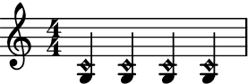
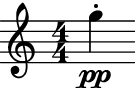
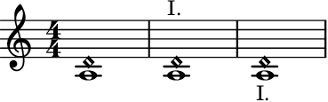
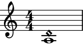

auxjad.ArtificialHarmonic¶
-
class
auxjad.ArtificialHarmonic(*arguments, multiplier: Optional[Union[abjad.utilities.Duration.Duration, Tuple[int, int]]] = None, tag: Optional[abjad.system.Tag.Tag] = None, style: str = 'harmonic', is_parenthesized: bool = False, markup: Optional[str] = None, direction: Union[str, abjad.enums.VerticalAlignment] = 'up')¶ Creates a chord with a tweaked top note head for notating artificial harmonics. This is a child class of
abjad.Chord.- Example:
Usage is similar to
abjad.Chord:>>> harm = auxjad.ArtificialHarmonic("<g c'>4") >>> harm.style 'harmonic' >>> abjad.f(harm) < g \tweak style #'harmonic c' >4

And similarly to
abjad.Chord, pitch and duration can be input in many different ways:>>> harm1 = auxjad.ArtificialHarmonic("<g c'>4") >>> harm2 = auxjad.ArtificialHarmonic(["g", "c'"], 1 / 4) >>> harm3 = auxjad.ArtificialHarmonic([-5, 0], 0.25) >>> harm4 = auxjad.ArtificialHarmonic([-5, 0], abjad.Duration(1, 4)) >>> staff = abjad.Staff([harm1, harm2, harm3, harm4]) >>> abjad.f(staff) \new Staff { < g \tweak style #'harmonic c' >4 < g \tweak style #'harmonic c' >4 < g \tweak style #'harmonic c' >4 < g \tweak style #'harmonic c' >4 }
- Example:
It is important to note that this class can only be initialised with exactly two pitches. Any other number of pitches will raise a
ValueError:>>> auxjad.ArtificialHarmonic("<g c' d'>4") ValueError: 'ArtificialHarmonic' requires exactly two 'note_heads' for initialisation
- Example:
When creating an
ArtificialHarmonic, use the keyword argumentstyleto set a different type of note head for the top note, such as'harmonic-mixed':>>> harm = auxjad.ArtificialHarmonic("<g c'>4", ... style='harmonic-mixed', ... ) >>> harm.style 'harmonic-mixed' >>> abjad.f(harm) < g \tweak style #'harmonic-mixed c' >4

- Example:
To notate natural harmonics with a parenthesised pitch for the open string at the bottom of the interval, set the keyword
is_parenthesizedtoTrue.>>> harm = auxjad.ArtificialHarmonic("<g c'>4", ... is_parenthesized=True, ... ) >>> harm.is_parenthesized True >>> abjad.f(harm) < \parenthesize \tweak ParenthesesItem.font-size #-4 g \tweak style #'harmonic c' >4

- Example:
Similarly to
abjad.Chord,ArtificialHarmoniccan take multipliers:>>> harm = auxjad.ArtificialHarmonic("<g c'>4", ... multiplier=(2, 3), ... ) >>> harm.multiplier abjad.Multiplier(2, 3) >>> abjad.f(harm) < g \tweak style #'harmonic c' >4 * 2/3

- Example:
All properties of
abjad.Chordare also available to be read. This class also includes two new properties namedstyleandis_parenthesized:>>> harm = auxjad.ArtificialHarmonic("<g c'>4") >>> harm.written_pitches "g c'" >>> harm.written_duration 1/4 >>> harm.style 'harmonic' >>> harm.is_parenthesized False
All these properties can be set to different values after initialisation:
>>> harm.written_pitches = [-5, 2] >>> harm.written_duration = abjad.Duration(1, 8) >>> harm.style = 'harmonic-mixed' >>> harm.is_parenthesized = True >>> harm.written_pitches "g d'" >>> harm.written_duration 1/8 >>> harm.style 'harmonic-mixed' >>> harm.is_parenthesized True
- Example:
The methods
sounding_pitch()andsounding_note()return the sounding pitch and sounding note, respectively. Their types areabjad.Pitchandabjad.Note, respectively.>>> harmonics = [ArtificialHarmonic("<g b>4"), ... ArtificialHarmonic("<g c'>4"), ... ArtificialHarmonic("<g d'>4"), ... ArtificialHarmonic("<g e'>4"), ... ArtificialHarmonic("<g g'>4"), ... ] >>> for harmonic in harmonics: ... print(harmonic.sounding_pitch()) b'' g'' d'' b'' g' >>> for harmonic in harmonics: ... print(harmonic.sounding_note()) b''4 g''4 d''4 b''4 g'4
- Example:
To add a markup expression to the artificial harmonic, use the
markupoptional keyword argument, which takes strings. By default, the markup position is above the harmonic note, but this can be overridden using the keyworddirection, which can take strings as well asabjad.Upandabjad.Down:>>> harm1 = auxjad.ArtificialHarmonic("<a d'>1") >>> harm2 = auxjad.ArtificialHarmonic("<a d'>1", ... markup='I.', ... ) >>> harm3 = auxjad.ArtificialHarmonic("<a d'>1", ... markup='I.', ... direction=abjad.Down) >>> staff = abjad.Staff([harm1, harm2, harm3]) >>> abjad.f(staff) \new Staff { < a \tweak style #'harmonic d' >1 < a \tweak style #'harmonic d' >1 ^ \markup { I. } < a \tweak style #'harmonic d' >1 _ \markup { I. } }
Setting
markuptoNonewill remove the markup from the note.>>> harm = auxjad.ArtificialHarmonic("<a d'>1", ... markup='I.', ... ) >>> harm.markup = None >>> abjad.f(harm) < a \tweak style #'harmonic d' >1

Error
If another markup is attached to the harmonic note, trying to set the
markuptoNonewill raise an exception:>>> harm = auxjad.ArtificialHarmonic("<a d'>1") >>> abjad.attach(abjad.Markup('test'), harm) >>> harm.markup = 'I.' >>> harm.markup = None Exception: multiple indicators attached to client.
- Example:
The note created by
sounding_note()inherits all indicators from theArtificialHarmonic.>>> harm = auxjad.ArtificialHarmonic(r"<g c'>4-.\pp") >>> abjad.f(harm.sounding_note()) g''4 \pp - \staccato

Error
Both
sounding_pitch()andsounding_note()methods raise a ValueError exception when it cannot calculate the sounding pitch for the given interval.>>> ArtificialHarmonic("<g ef'>4").sounding_pitch() ValueError: cannot calculate sounding pitch for given interval >>> ArtificialHarmonic("<g ef'>4").sounding_note() ValueError: cannot calculate sounding pitch for given interval
Methods
__init__(*arguments[, multiplier, tag, …])Initialises self.
sounding_note()Returns the sounding note of the harmonic as an
abjad.Note.sounding_pitch()Returns the sounding pitch of the harmonic as an
abjad.Pitch.Attributes
directionThe direction of the harmonic note head.
is_parenthesizedWhether the bottom note head is parenthesised or not.
markupThe markup of the harmonic note head.
multiplierGets multiplier.
note_headsGets note-heads in chord.
styleThe style of the upper note head.
tagGets component tag.
written_durationGets and sets written duration of chord.
written_pitchesThe written pitches of the two note heads.